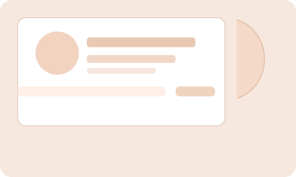

I blend habit science, simple rhythms, and measurable frameworks so you get sustainable energy, clearer focus, and a calmer routine without fads.
I use a measurable approach: baseline metrics, incremental habit windows, and iteration. Clients see lasting change because we test what works, then make it routine.

Truth: Short bursts can jumpstart change, but durable transformation needs repetition and feedback loops.
Truth: Context and design matter more than willpower. We shape environments and cues to reduce friction.
Truth: We test small adaptations to find what your biology and schedule actually tolerate.
Tiny actions anchored to existing routines to reliably build momentum.
Short cycles of tracking, reflection, and parameter tuning so changes are evidence-based.
Small alterations to your spaces that lower friction for good choices.
Designing sequences that multiply benefits over months.
A client implemented 3-minute micro-rituals and a 7-day tracking window — improvements in sleep timing and morning energy followed within 6 weeks.
We shaped short, measurable pauses through cue-triggered breathing and posture resets, reducing perceived overwhelm while maintaining productivity.
Start with a short diagnostic session to map priorities and build a lean plan.
{{PRIMARY_CTA_LABEL}}